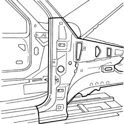
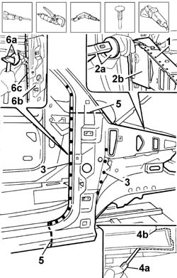
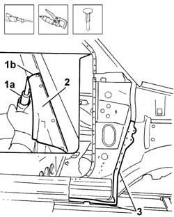
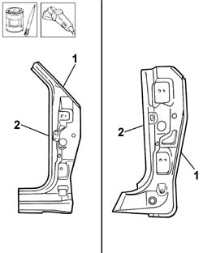
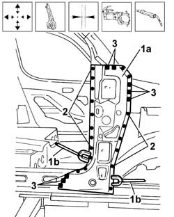
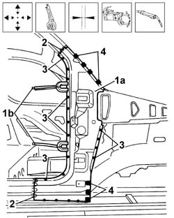
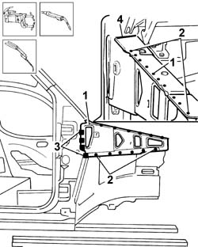

7210A60 R.R. FRONT PILLAR
- Path
- Procedures > 72 PANELS AND FRAMES > 7210 REMOVING-REFITTING > 7210A structural elements (front part) > 7210A60 R.R. FRONT PILLAR
- Kind
- repair procedure (removal / refitting; the operation number is the code)
- Applies to
- all engines; all production periods
- Interactive page
- https://sloeber94.github.io/elrnDB-fDbl/en/#/2585251
Applies to: all engines; all production periods
 Removing
Removing
 Refitting
RefittingCheck if any of the connected parts are deformed by checking body alignment dimensions. Use appropriate measurement tools (reference rigs, templates or gauges).
Straighten the body if necessary.

Applies to: all engines; all production periods
1. Use a chamfering machine and drill to reduce the weld spots along the upper area of the reinforcement.
2. Use a hammer and chisel (2a) to separate the reinforcement from the sealant between pillar and reinforcement, then remove the reinforcement (2b).
3. Use a chamfering machine and drill to reduce the weld spots alog the central pillar area.
4. Use a pneumatic saw (4a) to cut along the cutting line (4b) shown in the lower area of the trim.
5. Continue cutting around the outside of the pillar trim.
6. Use a hammer and chisel (6a) to separate trim (6b) from body (6c), then remove the trim.

Applies to: all engines; all production periods
1. Use a pneumatic saw (1a) to cut along the cutting line (1b).
2. Remove the cut edge of the trim from the body.
3. Use appropriate pliers to remove the cut edges from the lower and central areas of the body.

Applies to: all engines; all production periods
Refitting
RemovingStraighten the edges of the panel and grind along the entire affected body surface.
Apply electro-galvanized paint to the edges affected by the welding.
Straighten the edges of the panel if necessary.
1. Use a rotary brush to remove the corrosion-proofing around the edge of the replacement front pillar.
2. Apply electro-galvanized paint to the edges in contact with the body.

Applies to: all engines; all production periods
1. Correctly position the replacement front pillar frame (1a) on the bodyshell and secure it using self-locking clamps (1b).
Check it is properly aligned.
2. Spot weld along the area shown in the figure.
3. Fill weld the area shown in the figure.

Applies to: all engines; all production periods
1. Correctly position the replacement front pillar trim (1a) on the frame and secure it using self-locking clamps (1b).
Check it is properly aligned.
2. Carry out seam welding in the area shown in the figure.
3. Spot weld along the area shown in the figure.
4. Fill weld the area shown in the figure.

Applies to: all engines; all production periods
1. Position the front pillar reinforcement.
Check positioning is correct.
2. Spot welder along the area shown in the figure.
3. Fill weld the area shown in the figure.
4. Solder the area shown in the figure.

Applies to: all engines; all production periods
Check that the welded parts are correctly positioned.
Level the spot welds using a disc grinder.
Use a rotary brush to clean the inner parts.
Apply electro-galvanizing paint to the parts which have been ground.